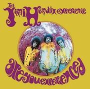

Biográfia De Jimi Hendrix
Feito por Whallisson Greg
Conteúdo
Introdução
James Marshall "Jimi" Hendrix (nascido Johnny Allen Hendrix; Seattle, 27 de novembro de 1942] – Londres, 18 de setembro de 1970) foi um guitarrista, cantor e compositor norte-americano.
Em praticamente todas as listas já publicadas de melhores guitarristas da história, ocupa o primeiro lugar, e um dos mais importantes e influentes músicos de sua era, em diversos gêneros musicais.
Depois de obter sucesso inicial na Europa, conquistou fama nos Estados Unidos depois de seu desempenho em 1967 no Festival Pop de Monterey.
| Jimi Hendrix | integrantes | Posição |
|---|---|---|
| Jimi Hendrix | Vocal e Guitarra |
| Capa | Nome | Ano De Lançamento |
|---|---|---|
|  | Are You Experienced? | 1967 |
| Axis: Bold as Love | 1968 | |
| Electric Ladyland | 1968 | |
| Band of Gypsys | 1969 | |
 |
Blues | 1994 |
| First Rays of the New Rising Sun | 1997 |
Links Interessantes
wikipedia
Revista Rolling Stone
Vagalume
Whallisson Greg